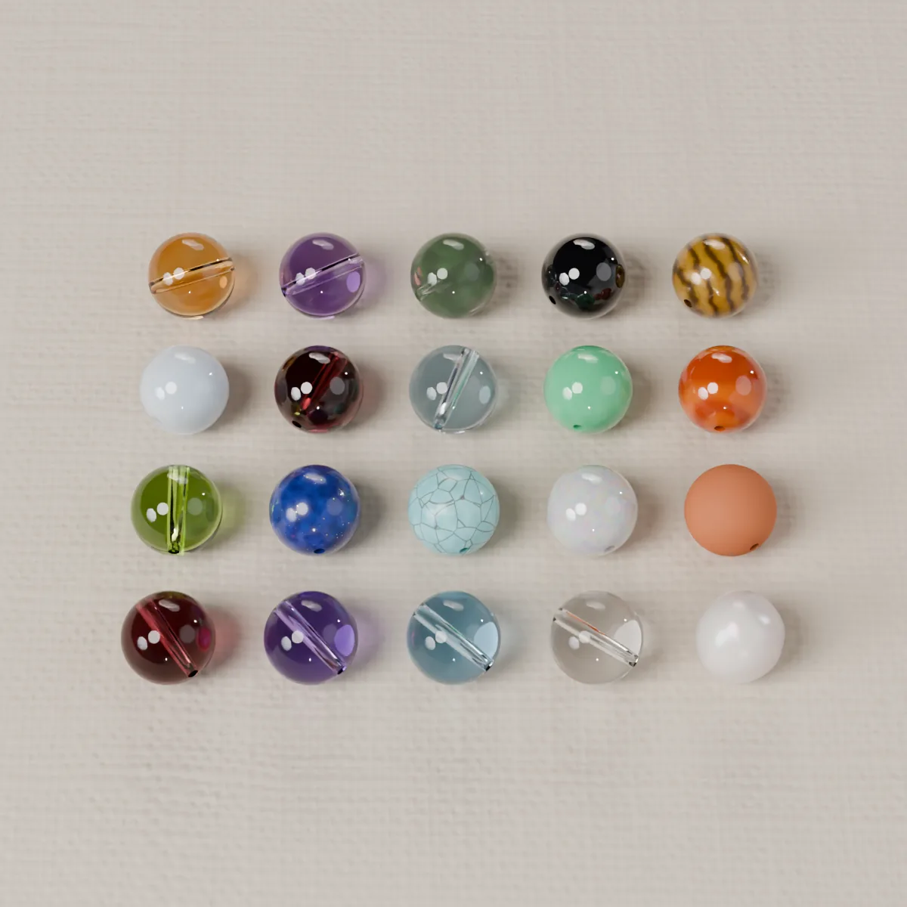
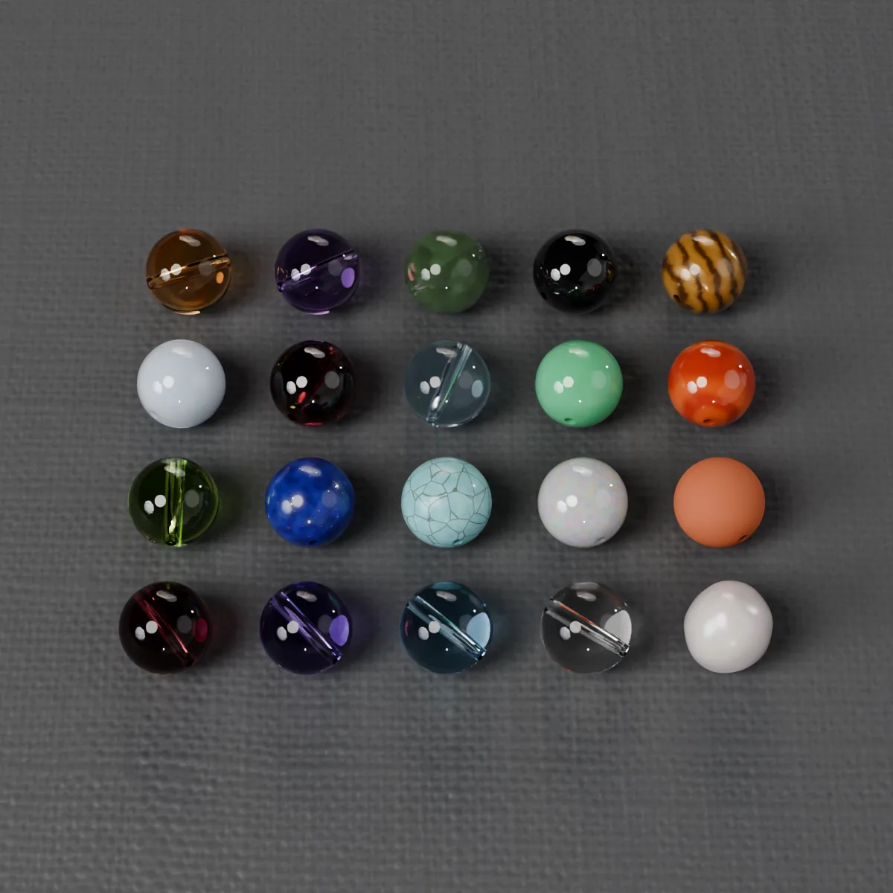

我们怎么讲寓意
很多人选石头，是因为它代表的意义。我们尊重这一点，也想把话说清楚：每种说法从哪里来、是谁在这么说、它做不到什么。
以上说法源自传统习俗和民间信仰，仅供参考；任何石头都不能治病，也不保证任何结果。
我们的做法
- 我们转述传统和民间说法，并注明出自哪种传统、有几个来源。
- 每个搭配都写明是按哪条规则得出的；之后在定制工坊里都可以改。
- 玻璃和陶瓷只是颜色：不附带任何寓意，也从不当作宝石来介绍。
- 新增的石头目前都是虚拟珠：画面仅作示意，价格待定，处理情况待供应商确认。


五个出发点，五条规则
心愿
规则：主石取各来源与这个心愿关联最一致的石头，辅石按一致度依次排列。
| 心愿 | 主石 | 辅石 |
|---|---|---|
| 爱与人缘 | 粉晶 | 月光石、淡水养殖珍珠 |
| 事业 | 绿幽灵 | 虎眼石 |
| 财富与丰盛 | 黄水晶 | 绿幽灵 |
| 学业与专注 | 紫水晶 | 白水晶 |
| 平安与守护 | 黑曜石 | 茶晶、黑玛瑙 · 亮面、925 银 · 亮面 |
| 贵人 | 紫水晶 | 绿幽灵 |
| 自信 | 虎眼石 | 红玛瑙、石榴石 |
| 表达 | 海蓝宝 | 青金石、绿松石 |
| 平静 | 茶晶 | 紫水晶、海蓝宝、月光石 |
"贵人"在法语和英语里没有完全对应的词，我们分别译为 les bonnes rencontres 和 supportive people。
我们没有、也不会设"健康"类心愿。
生日：诞生石与星座
规则：采用美国现行诞生石表（JA/AGTA）；4、5、7、9 月的官方石是贵重宝石，改用英国 2013 年表里适合做珠子的石头；10 月只做颜色版。每个月另有一个玻璃或陶瓷的颜色版。
| 月份 | 石头 | 来源表 | 颜色版 |
|---|---|---|---|
| 1 月 | 石榴石 | 美国表 | 酒红玻璃 |
| 2 月 | 紫水晶 | 美国表 | 紫罗兰玻璃 |
| 3 月 | 海蓝宝 | 美国表 | 浅海蓝玻璃 |
| 4 月 | 白水晶 (钻石) | 英国表（2013） | 无色玻璃 |
| 5 月 | 绿玉髓 (祖母绿) | 英国表（2013） | 青釉陶瓷 |
| 6 月 | 月光石、淡水养殖珍珠 | 美国表 | 象牙釉陶瓷 |
| 7 月 | 红玛瑙 (红宝石) | 英国表（2013） | 赤陶色陶瓷 |
| 8 月 | 橄榄石 | 美国表 | 磨砂灰绿玻璃 |
| 9 月 | 青金石 (蓝宝石) | 英国表（2013） | 墨蓝釉陶瓷 |
| 10 月 | — (欧泊或碧玺) | 只做颜色版 | 乳光玻璃 |
| 11 月 | 黄水晶 | 美国表 | 琥珀色玻璃 |
| 12 月 | 绿松石 | 美国表 | 海蓝玻璃 |
主规则：ORIMEA 按四元素配色（火象红橙；土象粉绿棕；风象白蓝黄；水象海蓝与珍珠）。法国常见的另一种说法是每个星座一块石头，我们并列列出。
| 星座 | 日期 | 元素 | ORIMEA 配色 | 法国常见说法 |
|---|---|---|---|---|
| 白羊座 | 3/21–4/19 | 火象 | 红、橙 · 红玛瑙、石榴石 | 红玛瑙 |
| 金牛座 | 4/20–5/20 | 土象 | 粉、绿、棕 · 粉晶、绿玉髓、茶晶 | 粉晶 |
| 双子座 | 5/21–6/20 | 风象 | 白、蓝、黄 · 白水晶、海蓝宝、黄水晶 | 黄水晶 |
| 巨蟹座 | 6/21–7/22 | 水象 | 海蓝与珍珠 · 海蓝宝、月光石、淡水养殖珍珠 | 月光石 |
| 狮子座 | 7/23–8/22 | 火象 | 红、橙 · 红玛瑙、石榴石 | 虎眼石 |
| 处女座 | 8/23–9/22 | 土象 | 粉、绿、棕 · 粉晶、绿玉髓、茶晶 | 东陵玉 (暂缺) |
| 天秤座 | 9/23–10/22 | 风象 | 白、蓝、黄 · 白水晶、海蓝宝、黄水晶 | 青金石 |
| 天蝎座 | 10/23–11/21 | 水象 | 海蓝与珍珠 · 海蓝宝、月光石、淡水养殖珍珠 | 黑曜石 |
| 射手座 | 11/22–12/21 | 火象 | 红、橙 · 红玛瑙、石榴石 | 绿松石 |
| 摩羯座 | 12/22–1/19 | 土象 | 粉、绿、棕 · 粉晶、绿玉髓、茶晶 | 赤铁矿 (暂缺) |
| 水瓶座 | 1/20–2/18 | 风象 | 白、蓝、黄 · 白水晶、海蓝宝、黄水晶 | 紫水晶 |
| 双鱼座 | 2/19–3/20 | 水象 | 海蓝与珍珠 · 海蓝宝、月光石、淡水养殖珍珠 | 海蓝宝 |
这只是传统对应表，不是个人星盘：我们不计算上升星座，也不计算行星位置。
生年：十二生肖
规则：出生年地支 → 五行 → 相生的五行 → 石头（据新浪艺术 2018 年的一篇文章）。生肖以春节（正月初一，公历 1 月 21 日至 2 月 20 日之间）为界，与官方历法一致。
| 生肖 | 五行 | 相生 | 表中的石头 | 本站用 |
|---|---|---|---|---|
| 猴、鸡 | 金 | 土 | 黄水晶 | 黄水晶、虎眼石 |
| 虎、兔 | 木 | 水 | 黑发晶 (暂缺) | 黑曜石、黑玛瑙 · 亮面 |
| 鼠、猪 | 水 | 金 | 金发晶 (暂缺) | 白水晶、925 银 · 亮面 |
| 蛇、马 | 火 | 木 | 绿幽灵 | 绿幽灵、橄榄石 |
| 牛、龙、羊、狗 | 土 | 火 | 紫水晶 | 紫水晶、石榴石 |
本命年佩戴黑曜石是一种民间习俗。我们只把它当作习俗来介绍，不附加任何说法。
五行（按颜色）
五行传统把每个元素和颜色对应起来。多数来源按颜色给石头分五行，我们也这样做。
| 五行 | 颜色 | 石头 | 颜色版 |
|---|---|---|---|
| 木 | 绿 | 绿幽灵、橄榄石、绿玉髓 | 磨砂灰绿玻璃、青釉陶瓷 |
| 火 | 红、紫、橙、粉 | 石榴石、紫水晶、红玛瑙、粉晶 | 酒红玻璃、紫罗兰玻璃、赤陶色陶瓷 |
| 土 | 黄、棕 | 黄水晶、虎眼石、茶晶 | 琥珀色玻璃 |
| 金 | 白、金、银 | 白水晶、月光石、淡水养殖珍珠 | 无色玻璃、乳光玻璃、象牙釉陶瓷 |
| 水 | 黑、深蓝 | 黑曜石、海蓝宝、青金石、黑玛瑙 · 亮面、绿松石 | 墨蓝釉陶瓷、浅海蓝玻璃、海蓝玻璃 |
有分歧的归类（本站按多数）
- 粉晶：火（3 个来源）或木（1 个）
- 茶晶：土（2 个来源）或水（1 个）
- 黄水晶：土（8 个来源）或金（2 个）
- 紫水晶：火（5 个来源）或木（1 个）
- 绿松石：水（1 个来源）或木（1 个）
- 淡水养殖珍珠：按白色属金；有 3 个来源因"生于水中"归水
八字
八字是用天干地支记录出生年、月、日、时的中国传统方法，一共八个字。本站用开源库 lunar-javascript（MIT 许可）在你的浏览器里排四柱。
规则（一种简化算法）：统计八个字的五行（月支计两次）；生扶日主的占一半及以上为"身强"，取日主所生、所克的五行；否则为"身弱"，取生日主的五行和日主本身。不同流派结论可能不同；仅作配色灵感。
- 不问出生地，不换算真太阳时：日期和时辰按填写的直接计算。
- 本站按 23 点换日：23 点到午夜之间出生的，请填第二天并选子时。不填时辰就没有时柱。
- 五行计数只取地支本气，不计藏干。
- 八字的年柱按立春换；“生年”一栏的生肖则按春节换。出生在两者之间的，两边的年份可能不同。
结果只给颜色和石头，不写性格，也不做任何推断。
一句话
规则：从这句话里识别出心愿和颜色；之后按心愿的规则选主石，再按颜色选辅石。
默认情况下，这句话只在你的浏览器里读取：我们在三种语言里找心愿和颜色的关键词。它不会被发送，也不会被保存。
AI 模式默认关闭，之后可能开启。它只把这句话分类为心愿和颜色，不生成任何文字；解释一律来自本站的表。开启后，只有你点击"用 AI 细化"时，这句话才会发给我们的服务商 OpenRouter（再交给 Mistral Small 3.2 模型处理），ORIMEA 不会保存。
各来源的分歧
- 星座：各种清单几乎没有重合。所以我们给出自己的规则（按元素配色），并列出法国常见的一份。
- 生肖：各种"生肖配石"表几乎都不一样；本站采用一份按五行相生推导的公开表。
- 诞生石：美国表和英国表有几个月不同；本站写明用的是哪一份。
- 星座日期：各来源相差 1 天。
- 同一块石头在不同文化里意思可能不同：紫水晶在中文来源里多指学业，在法国多指平和。
为什么我们不谈健康
很多网站说石头对身体或情绪有作用，但没有一种被证实；在法国，关于健康的宣称受到法律严格限制。所以我们不收录这类说法，也不设和健康有关的心愿。健康问题请咨询医生。
以上说法源自传统习俗和民间信仰，仅供参考；任何石头都不能治病，也不保证任何结果。
你的数据留在你的设备上
心愿、日期、时辰和句子都在你的浏览器里处理，不发送，也不保存。保存的搭配只记录珠子，不会记录你的日期或句子。唯一的例外是上面说的 AI 模式，而且只在你点击之后。
暂缺的石头
有些规则提到的石头我们还没有。我们用同色的石头代替，并在结果里写明。
- 黑发晶 — 改用 黑曜石、黑玛瑙 · 亮面
- 金发晶 — 改用 白水晶、925 银 · 亮面
- 东陵玉 — 改用 绿玉髓
- 赤铁矿 — 改用 黑曜石
来源
这些表格整理自 2026 年 9 月对中文、英文和法文网站、店铺，以及法国广告相关规定的调研（约 180 个来源）。文中的来源数都出自这份调研笔记。